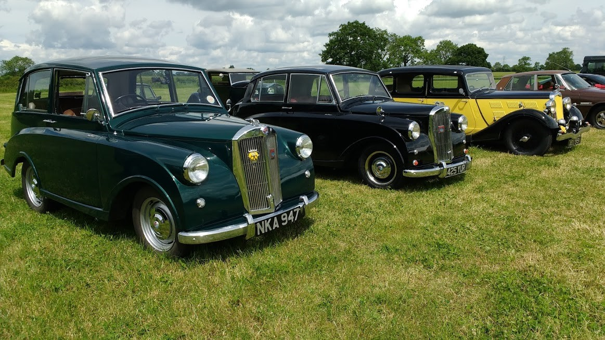

<link href="{{ site.baseurl }}/events/article.css" rel="stylesheet" type="text/css">
<main>
    <article>
        <ol id="breadcrumb">
            <li>
                <a href="{{ site.baseurl }}/">Home</a>
            </li>
            <li>
                <a href="{{ site.baseurl }}/events">Events</a>
            </li>
            <li>
                <a href="{{ site.baseurl }}/events/local">Local</a>
            </li>
            <li>The Barn Restaurant & Brewery 2019</li>
        </ol>
        <div id="content">
            <h1>The Barn Restaurant & Brewery</h1>
            <h2>Willey, Warwickshire, 9<sup>th</sup> June 2019</h2>
            <p>I met up with Roger Huntley in our Mayflowers at The Barn today in decent weather, after all the recent rain. This is a nice 30-mile round trip for me, about 45 for Roger. Phil Aychurch was hoping to be there as well in his Mayflower on its first trip out after fitting it with a Triumph Herald 1200 engine. Looks like the cooling system needs some work as he only made it half way before it boiled-up.</p>
            <p>Paul Burgess (1200)</p>
            
        </div>
    </article>
    <aside>
        <h2>Members’ cars in attendance</h2>
        <ul class="disableListStyles">
            <li>
                <h3>Paul Burgess</h3>
                <div>
                    <div class="numberPlateMarker">NKA 947</div>
                </div>
            </li>
            <li>
                <h3>Roger Huntley</h3>
                <div>
                    <div class="numberPlateMarker">425 YUR</div>
                </div>
            </li>
        </ul>
    </aside>
</main>
